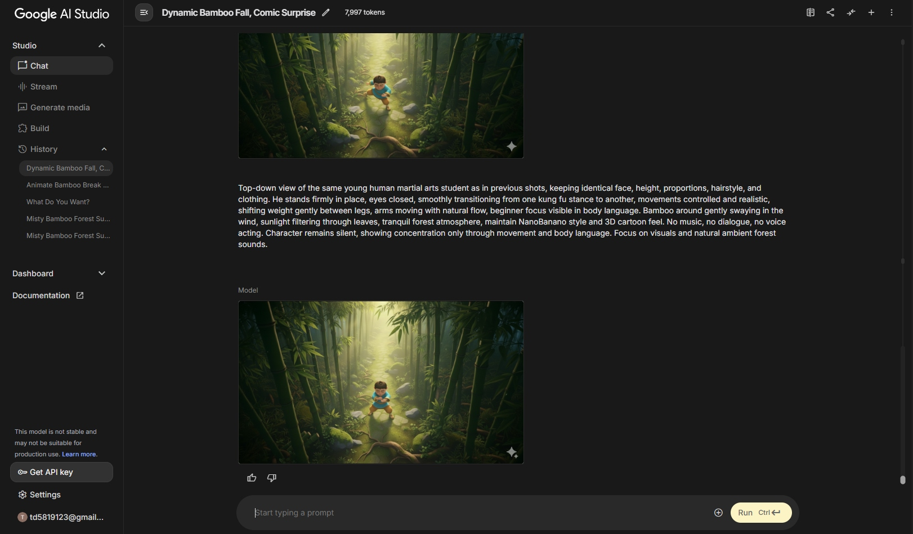
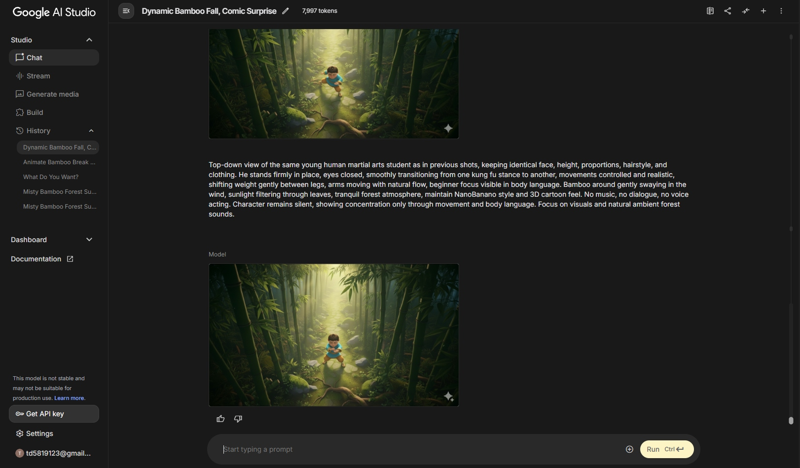
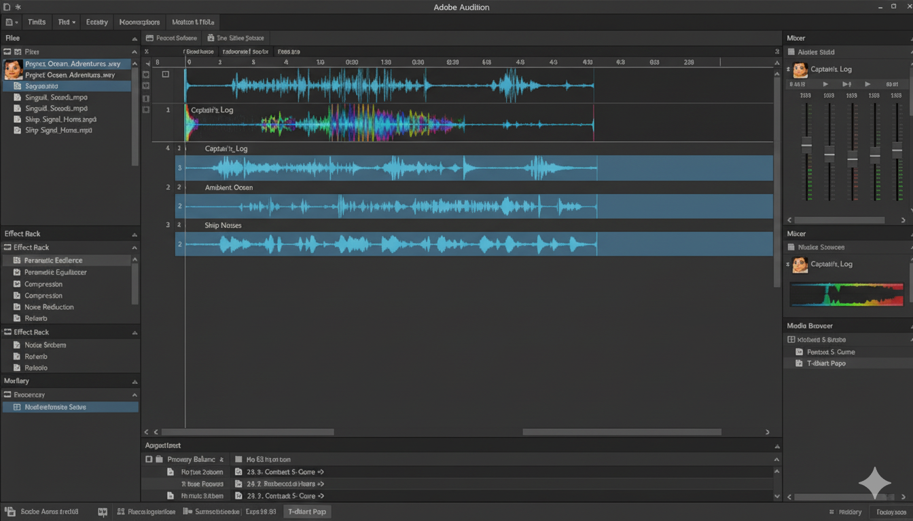
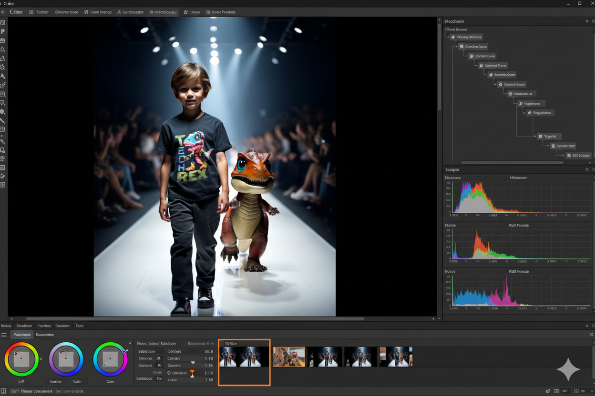
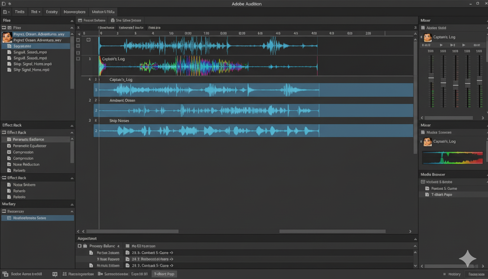
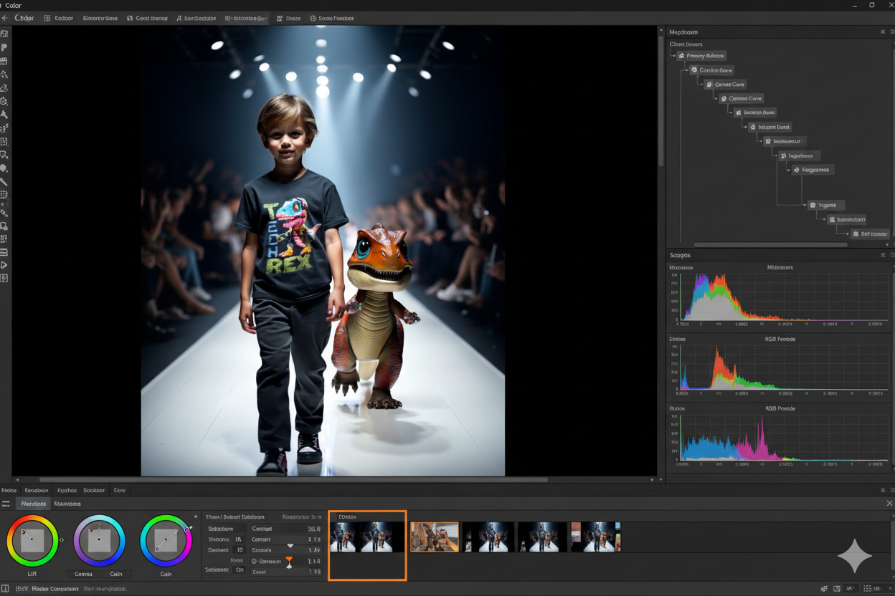

Мои мультфильмы
1. Атмосферное видео с ночной сценой
Опыт: 1 год работы с AI-генерацией и созданием видео.
Технический процесс: Генерация и обработка видео в Veo 3, создание изображений в nano banano и midjourney, монтаж в Sony Vegas.
Особенности: Магическая атмосфера с мерцающими огоньками, плавные переходы и кинематографичная подача материала.


2. Ролик с атмосферой ожидания поезда
Технический процесс: Видео сгенерировано в Veo 3, визуальная стилизация nano banano и midjourney, монтаж и озвучка в Sony Vegas.
Особенности: Эмоциональная глубина, реалистичная анимация персонажа, атмосферное освещение станции.
 

3. Демонстрация движения персонажа и лесной атмосферы
Технический процесс: 3D модели и сцены сгенерированы в nano banano, видео в Veo 3, монтаж в Sony Vegas.
Особенности: Динамичные боевые сцены, детализированная анимация движений, реалистичная лесная среда.
4. Начало Руси
Историческая анимация с персонажами и эффектом снега, около 1 минуты.
Технический процесс: Видео и эффекты созданы в Veo 3, изображения nano banano, стилизация midjourney, монтаж в Sony Vegas.
Особенности: Исторический контекст, эпические сцены, детализированные костюмы и атмосфера древней Руси.
 


